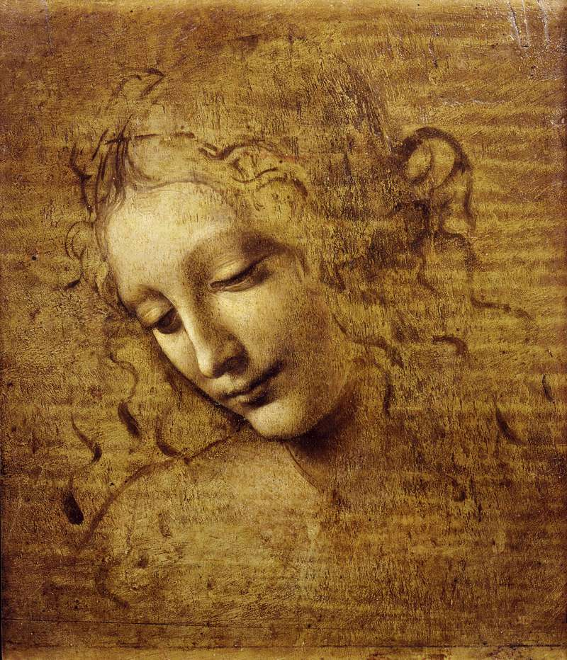
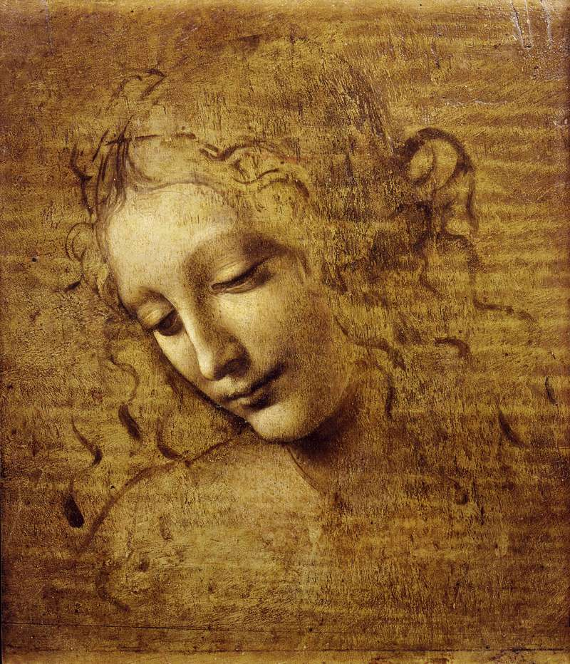

Leonardo da Vinci
 



Leonardo da Vinci was a true genius who graced this world with his presence
Leonardo da Vinci was an Italian polymath of the Renaissance whose areas of interest included invention, drawing, painting, sculpture, architecture, science, music, mathematics, engineering, literature, anatomy, geology, astronomy, botany, paleontology, and cartography. He has been variously called the father of palaeontology, ichnology, and architecture, and is widely considered one of the greatest painters of all time (despite perhaps only 15 of his paintings having survived)
Born out of wedlock to a notary, Piero da Vinci, and a peasant woman, Caterina, in Vinci, in the region of Florence, Italy, Leonardo was educated in the studio of the renowned Italian painter Andrea del Verrocchio. Much of his earlier working life was spent in the service of Ludovico il Moro in Milan, and he later worked in Rome, Bologna and Venice. He spent his last three years in France, where he died in 1519.
Leonardo is renowned primarily as a painter. The Mona Lisa is the most famous of his works and the most popular portrait ever made. The Last Supper is the most reproduced religious painting of all time and his Vitruvian Man drawing is regarded as a cultural icon as well. Salvator Mundi was sold for a world record $450.3 million at a Christie's auction in New York, 15 November 2017, the highest price ever paid for a work of art. Leonardo's paintings and preparatory drawings—together with his notebooks, which contain sketches, scientific diagrams, and his thoughts on the nature of painting—compose a contribution to later generations of artists rivalled only by that of his contemporary Michelangelo.
Although he had no formal academic training, many historians and scholars regard Leonardo as the prime exemplar of the "Universal Genius" or "Renaissance Man", an individual of "unquenchable curiosity" and "feverishly inventive imagination." He is widely considered one of the most diversely talented individuals ever to have lived. According to art historian Helen Gardner, the scope and depth of his interests were without precedent in recorded history, and "his mind and personality seem to us superhuman, while the man himself mysterious and remote." Scholars interpret his view of the world as being based in logic, though the empirical methods he used were unorthodox for his time.
Leonardo is revered for his technological ingenuity. He conceptualized flying machines, a type of armoured fighting vehicle, concentrated solar power, an adding machine, and the double hull. Relatively few of his designs were constructed or even feasible during his lifetime, as the modern scientific approaches to metallurgy and engineering were only in their infancy during the Renaissance. Some of his smaller inventions, however, entered the world of manufacturing unheralded, such as an automated bobbin winder and a machine for testing the tensile strength of wire. He is also sometimes credited with the inventions of the parachute, helicopter, and tank. He made substantial discoveries in anatomy, civil engineering, geology, optics, and hydrodynamics, but he did not publish his findings and they had little to no direct influence on subsequent science.